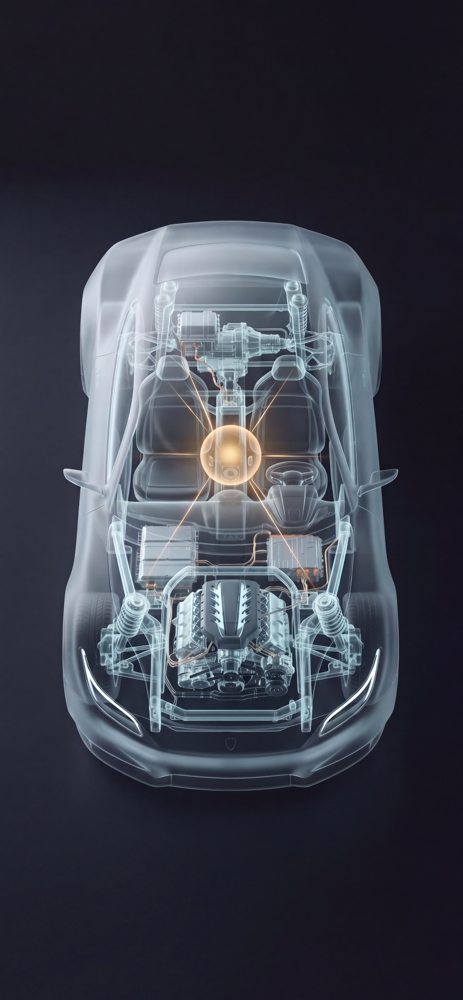

Mario
Sanchis
Tormo
Cojo proyectos técnicos con muchas piezas y muchas personas, y hago que lleguen a algún sitio.
Lo que hice con cada año
Acabo de salir de la carrera, así que no puedo contar años de experiencia. Puedo contar qué hice con cada uno. Desde el primer día quise aprovechar la universidad al máximo, y esto es lo que salió.
{{ h.hecho }}
Ahí entendí dónde está mi sitio: no en ser el mejor técnico de la sala, sino en decidir entre disciplinas y traducir de una a otra.
El currículum, en corto
La misma historia, contada como experiencia profesional.
{{ t.descripcion }}
Entre el cliente y la ingeniería
Lo explico con un coche

Piensa en un coche. Detrás hay equipos con un foco muy claro, y cada uno es imprescindible:
Elige el motor y la transmisión y diseña un chasis que aguante las cargas.
Su pregunta: ¿resistirá?
Integra la potencia, el cableado y cada componente para que todo reciba lo que necesita.
Su pregunta: ¿encaja y funciona?
Conecta sistemas y sensores para que el coche responda.
Su pregunta: ¿se entienden entre sí?
Decide qué coche vamos a construir: para quién es, qué tiene que sentir quien lo conduce, qué pesa más, la estabilidad o la ligereza.
Su pregunta: ¿es lo que el cliente necesita?
Mi sitio es el cuarto. Hablo los dos idiomas: el del cliente y el de la ingeniería. Defino qué tiene que hacer el producto, con criterio técnico suficiente para que sea alcanzable, y los especialistas lo hacen real, llevando cada parte más lejos de lo que yo podría. Ninguna capa funciona sin las otras.
Contacto